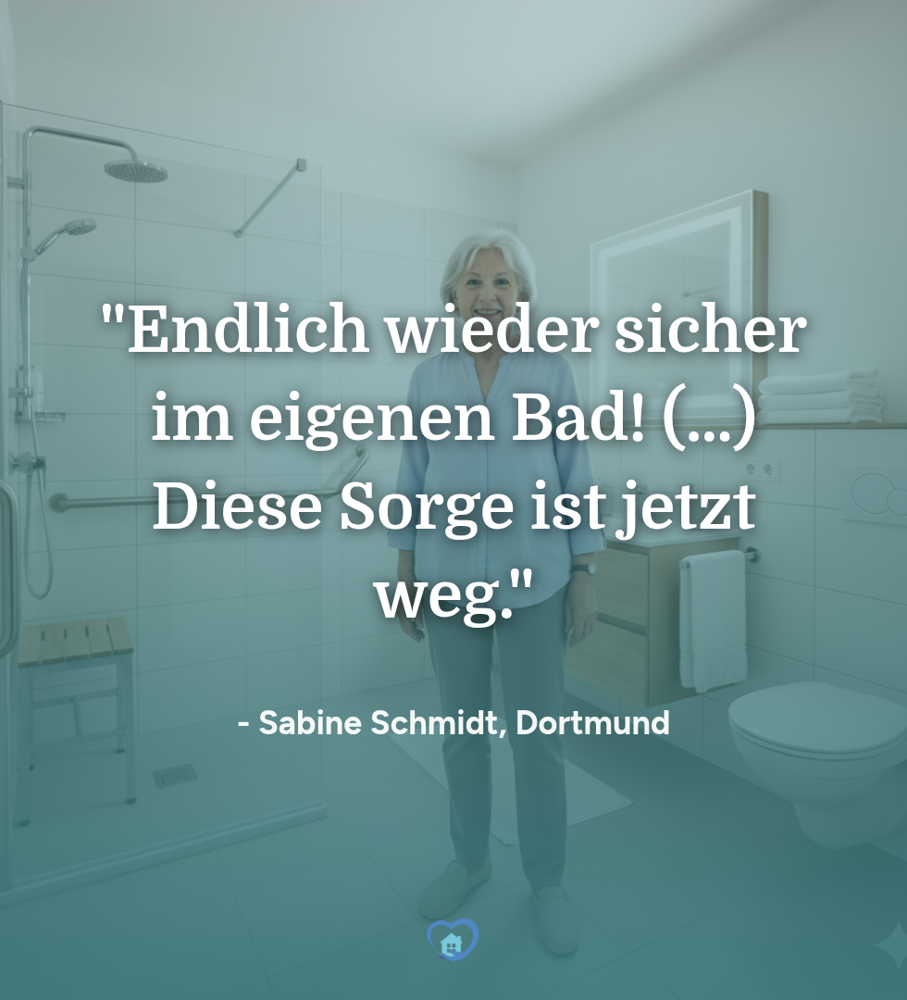

Pflegekassen-Antrag: Was wollen SIE wissen? 🤔
"Welchen Pflegegrad brauche ich?"
"Was ist, wenn der Antrag abgelehnt wird?"
"Muss ich in Vorkasse treten?"
Der Antragsprozess wirft viele Fragen auf. Und wir wollen sie beantworten!
Stellen Sie uns in den Kommentaren Ihre dringendste Frage zum Pflegekassen-Zuschuss für den Badumbau. Die häufigsten Fragen beantworten wir direkt hier und in unserem neuen großen Ratgeber!

👠Gefällt mir
💬 Kommentieren
🔠Teilen